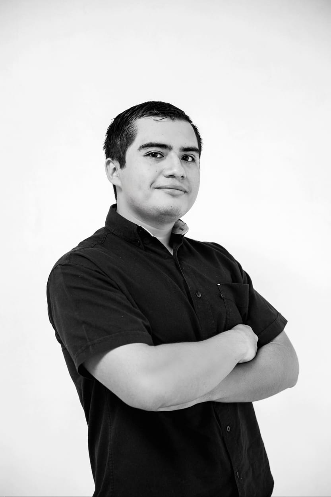

Carlos Augusto May Vivas
Software Engineer
I am a hardworking, organized, and responsible person. I also consider myself solution-oriented, with a positive attitude, and capable of solving problems easily.
Work Experience
- Web Development (2022 - Now) - Designed visually appealing and functional elements to attract users.
- FrontEnd Developer - Developed frontend side on "Kinub" website as a member of LoopCrack Digital Agency Studio.
Education
- Bachelor's Degree in Software Engineering - Universidad Autónoma de Yucatán (2021 - 2025) - GPA: 92.51
- English & French - Institutional Language Center, Universidad Autónoma de Yucatán
Achievements
- Introduction to Research Abroad Program (IRAP) - Texas 2023
- Hackathon BASE Bank - Yucatán 2022
Skills
- JavaScript, HTML, CSS, PHP, MySQL, TypeScript
- Intermediate Python & Java
- Adaptability, Leadership, Communication